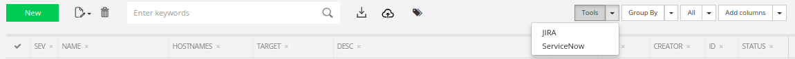
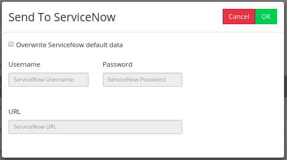
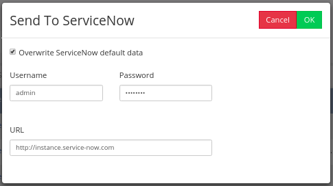
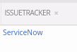
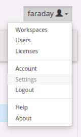
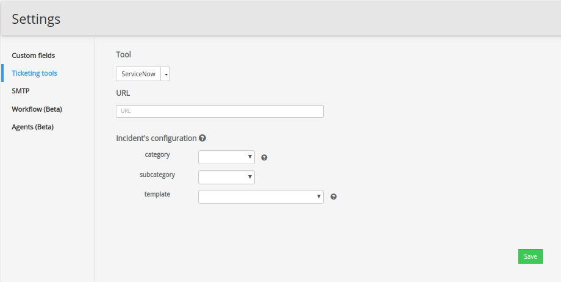

ServiceNow¶
This feature allows you to send vulnerabilities from Faraday to ServiceNow as an incident (using ServiceNow's Incident table).
Send vulnerabilities to ServiceNow¶
To send vulnerabilities to ServiceNow, go into our Status Report, select the desired vulnerabilities, click on the Tools button and then click on the ServiceNow option.
Info
Keep in mind that only confirmed vulnerabilities can be sent.

Sending To ServiceNow¶
Once the ServiceNow dialog opens, you have two options:
1: You can use the default data saved in the Ticketing Tools section of Settings (see Save ServiceNow's Configuration for more information):

2: You can overwrite ServiceNow default data by clicking on the checkbox button and then manually input your ServiceNow credentials. Then click OK:

Issuetracker¶
Once the vulnerability has been sent to ServiceNow, add the column issuetracker, so you can see a link that will lead you to the incident in ServiceNow.

Issuetracker's JSON¶
We added the issuetracker_json field which, if you’re using our ServiceNow integration, will give you details about the issue you created from Faraday to your ticketing instance. You can also use this field on your Executive Reports, and can render either the URL of your issue or just the ID for it.
Sending vulnerability’s evidence¶
You can send the vulnerability’s evidence to ServiceNow. The evidence will be sent as an incident’s attachments. Keep in mind the following considerations:
- You should have the right permissions to add attachments to an incident.
- The attachment size allowed by your ServiceNow\'s instance must be greater than the size of the attachment that you want to send.
Save ServiceNow's Configuration¶
To save ServiceNow's configuration, go to Settings:

Then go to the Ticketing Tools section:

URL¶
Use this field to save the URL of the ServiceNow's instance where you want the vulnerability to be sent.
Incident's configuration¶
In the Incident's Configuration section, you can set the way you want the vulnerabilities to be parsed as ServiceNow’s incident. You can set the incident’s category and subcategory in which the vulnerabilities will be sent or you can even use Jinja2 syntax to create your own templates to parse the vulnerabilities’ information and use these templates as the incident’s description in ServiceNow.
Incident’s category and subcategory¶
In these dropdown menus, you can set the category and the subcategory of the incident. Once you send the vulnerability to ServiceNow, you’ll see the same category and subcategory that you defined in Faraday. To check which category and subcategory you can choose, take a look at the following ServiceNow’s link.
Template¶
The template's name where you'll define the incident’s description. You can call any attribute of the vulnerability object using Jinja2 syntax. E.g., if you want your incident in ServiceNow to have as description the target, the hostnames, and the severity of the vulnerability, the template would be as follows:
Simple template¶
{# Service now integration #}
Name: {{ vuln.name }}
Target: {{target}}
Hostnames:
{%for hostname in hostnames%}
- {{hostname}}
{%endfor%}
Severity: {{severity}}
Complex template¶
{# This is a Template for Faraday service now Integration #}
{# Pre-Flight Adjustments #}
{% set issuetracker_config = 'service now' %}
{% set http_size_config = 4096 %}
{% if 'med' in vuln.severity %}
{% set corrected_severity = 'Medium' %}
{% else %}
{% set corrected_severity = vuln.severity %}
{% endif %}
{# Issue template structure should go under this comment #}
{% if 'VulnerabilityWeb' in vuln.type %}
# [{{ corrected_severity | capitalize}}] {{vuln.name}} - ({{vuln.path}})
{% else %}
# [{{ corrected_severity | capitalize}}] {{vuln.name}}
{% endif %}
## Description
{{ vuln.desc }}
#### This issue has been rated as: `{{ corrected_severity | capitalize }}`
Affected Asset: {{vuln.target}}
{% if vuln.website %}
Affected URL: {{ vuln.website }}{{ vuln.path }}
{% endif %}
{% if vuln.hostnames %}
#### Hostnames
{% for hostname in vuln.hostnames %}
- {{hostname}}
{% endfor %}
{% endif %}
## Recommendations
{{ vuln.resolution }}
{%for ref in vuln.refs%}
- {{ref}}
{%endfor%}
{%if vuln.easeofresolution%}
#### Estimated ease of resolution
{{ vuln.easeofresolution | capitalize }}
{%endif%}
### Technical Details
{%if vuln.data%}
#### Proof of Concept
{{vuln.data}}
{%endif%}
{%if vuln.request%}
#### Request
{{vuln.request|truncate(http_size_config, False, '...', 0) }}
{%endif%}
{% if vuln.response %}
#### Response
{{ vuln.response|truncate(http_size_config, False, '...', 0) }}
{%endif%}
## Issue [{{ vuln.id }}] {{vuln.name}} [{{vuln.status}}]
{# A vulnerability might be associated with more tha one issuetracker id #}
{% for key, value in vuln.issuetracker_json.items() %}
{% if issuetracker_config in key%}
This issue has already been reported in this platform:
- {{ key | capitalize}}
{% for line in value %}
- Issue: {{line.url}}
{% endfor %}
{% endif %}
source: created by {{vuln.owner or "faraday"}} using {{vuln.tool}} - {{vuln.external_id}} - {{vuln.date}}
{% endfor %}
{# end of file #}
This template must be located inside the folder
/home/faraday/.faraday/integrations_templates/*